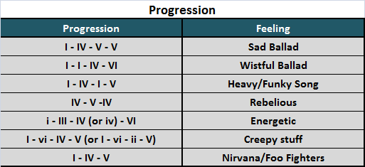

Don't worry if you don't understand it right now. Just think of the feeling of the song you're trying to go for.
First, you must select your progression. Progressions are different cominations of chords that give a song it's specific sound. There are not too many of these and using the same as another song isn't stealing as long as you also don't use the same key (more on that next). Chose one from the right column and write it down.
Next, you're going to choose the Mode you're going to play your progression in: Major or Minor.
Major Mode: Generally happy sounding. Upbeat.
Major chords can be found here or navigated to at the top of the page
Minor Mode: Generally sad sounding. Tension filled.
Minor chords can be found here or navigated to at the top of the page
Now you're going to choose the Key you're going to play your song in. You have 7 choices: A, B, C, D, E, F or G. Each has it's own characteristic, however, there are no absolute rules. Here's a general guideline for each Key:
A: Melancholic
B: Sharp
C: Happy
D: Classical
E: Hard (think Metal but also used in Military music
F: Passionate
G: Tragic
Let's say you want to play a Sad Ballad. Our first step is to select the progression from our chart above.
It shows us the progression of I - IV - V - V
Maybe you're really looking to tear some hearts out. Let's make it Minor and Melancholic: Key of A.
Minor + Key of A = A Minor
You can find all the chords for "A Minor" here in the top row of the chart.
Look at your progression and find the corresponding Roman Numberal to figure out what chord you need to use. We find that the chord progression is:
Am - Dm - Em - Em
You can find all these chords and more here.
Now, just play it out! Repeat the progression. Voila! You now have the foundation for your song. Write to out some soulful lyrics and you'll be winning Grammy's in no time!